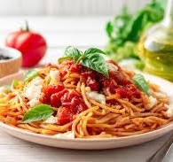

🍝 Classic Garlic Olive Oil Pasta (Aglio e Olio)

Ingredients:
- 200g spaghetti or your favorite pasta
- 3 tablespoons olive oil
- 3 cloves garlic, thinly sliced
- A pinch of red pepper flakes (optional)
- Salt (to taste)
- Fresh parsley, chopped (optional)
- Grated Parmesan cheese (optional)
Instructions:
- Bring a large pot of salted water to a boil.
- Add pasta and cook according to package instructions until al dente. Reserve ½ cup of pasta water, then
drain.
- In a pan, heat olive oil over medium heat.
- Add sliced garlic and sauté until golden (not burnt).
- Add red pepper flakes if using.
- Toss in the cooked pasta and mix well. Add a splash of reserved pasta water if it looks dry.
- Season with salt.
- Garnish with chopped parsley and Parmesan, if desired.
- Serve immediately and enjoy!
more recipes
to up
to home